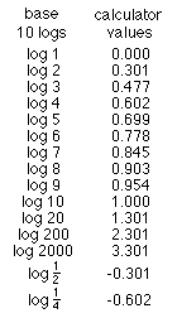
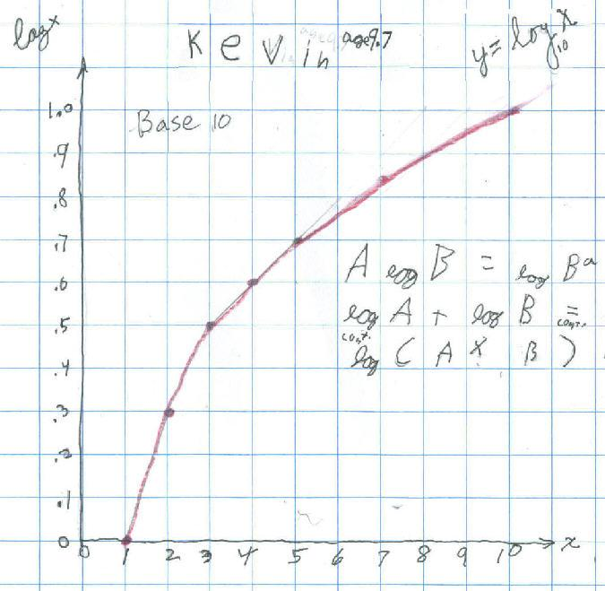

Kevin, age 9.7, finds identities for logarithms and graphs y = log10x
Don wrote the first column of logs below, then asked Kevin to guess and write down what the log of 1 is (of course he had no idea what a log is!!). Then he was to find the log of 1 on a calculator (0). Then guess and write down the log of 2, then write down what the calculator gives for the log of 2 (0.301) and do the same for the rest of these. They did each to 3 decimal places:

Then Don asked Kevin to look for a pattern in the numbers. Kevin saw that 2 * log 2 = log 4 and 3 * log 2 = log 8 and Don showed Kevin he could write 8 as 23 , so he wrote 3 * log 2 = log 23 and Don asked him to do more like these and generalize. See his first generalization on the graph. With Don's egging him on, he found log 2 + log 3 = log 6 = log (2x3) and he did more like this and generalized it on the graph.

Kevin took about 2 -45 minute sessions to do this. He did a fine job! Don asked if he would look for more patterns.
Don and Kevin talked about writing the log equation log10100 = 2 (read as the log of 100 base 10 equals 2), as the exponential equation 102 = 100. Then Don asked kevin what the log10200 = ? He wasn't sure, but Don said he could use his identity above log10200 = log10(2x100) = log102 + log10100. He knew log102 = 0.301 and log10100 = 2, so log102 + log10100 = 0.301 + 2 = 2.301 !! EASY. Kevin then found log10300, log10400, up to log101000. Then after a little discussion about the scales, he graphed y= log10x from 0 to 1000, by 100's for x. Kevin said he would mail this graph to Don when he finished it. Along the way, Don told Kevin about how the logarithm was invented by Napier (along with some others), and the result was to vastly increase the computational powers of astronomers like Tycho Brahe and Kepler. That was because products are changed into sums using Kevin's identity log10A + log10 B = log10(AxB) and when one is dealing with large numbers, as with distances to the moon and sun, it it much simpler to add the logs, than multiply the numbers.